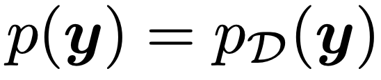
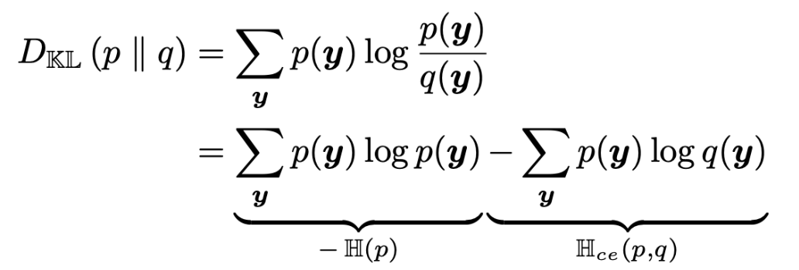
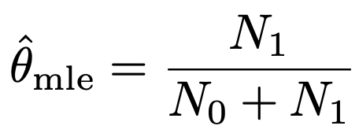
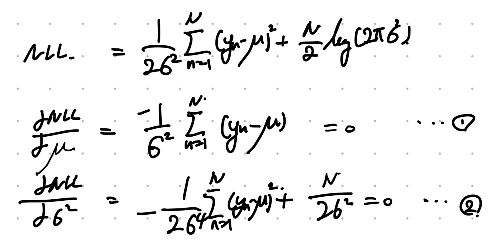
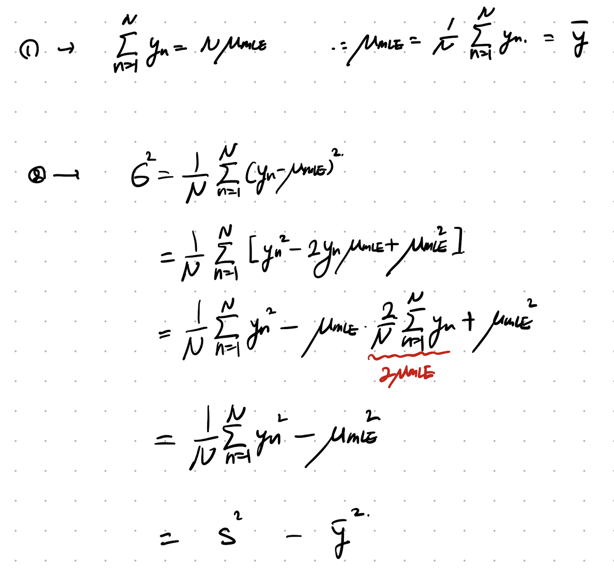
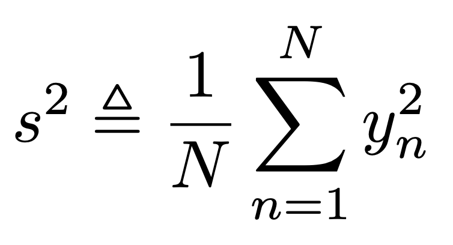
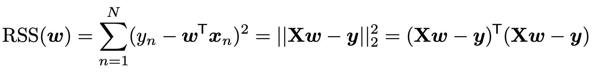
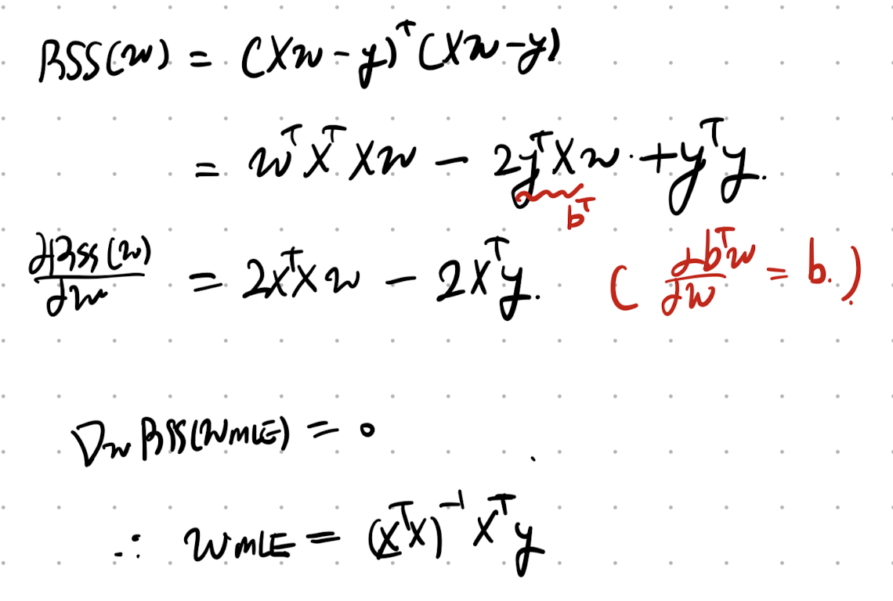

지금까지 우리는
regression classification
하기 위해서,
확률모델을
어떻게 설계해야하는 지
모델에 집중했다면,
이제 최적의 모델
파라메터 θ
를
어떻게 찾아야 하는지를 살펴보자.
정의는 다음과 같다.
Maximum Likelihood Estimation (MLE)

단순하다,
현재 가지고 있는 Data의 집합 D
를 가장 높은 확률로 나타내는
파라메터
(
θ)를
설정하는 것.
여기서, 데이터 집합에는 여러가지의 데이터들이 섞여 있다.
각각 측정값은 독립적이므로 확률의 독립은 곱셈으로 표현된다.
(여러개의 센서로 측정한 경우, 센서 각각은 독립적)

independent and identically distributed.
여기서, log를 씌워주어 곱셈을 덧셈으로 전환해주고,
log likelihood
라고 정의하자.

여기서, 우리는 결국 최적화를 진행하는 것이다. 가장 합이 크게하는
θ
를 찾는 것.
(이후에 배우겠지만, 최적화를 위해서는 최솟값으로 만드는 것이 가장 좋다)
따라서 -를 앞에 붙혀주어서,
negative Log likelihood
를 정의해주자.

최솟값 문제로 전환.
첫번째 방법은, prior p(
θ
) ~ 1 , 모든
θ에 대한 사전지식이 없는 상황이라면
우리는 간단하게 Bayes Rule을 이용해서 다음과 같이 표현가능하다.

두번째 방법은, 현재 모델의.
θ를 기준으로 데이터의 D의 확률분포 를 q(y)로 정의하고,

우리가 training에 사용할 실제 데이터의 확률분포를 다음과 같이 p(y)로 표현하자.

여기서 p(y)와 q(y)의 차이를 적게하는
θ를 찾는 것이다.
여기서 주의할점은 단순히 그 차이를 뺄셈식으로 표현하지 않고
[KL divergence]
을 이용한다.

Equation of KL divergence
여기서 좌측 H(p)는
entropy of p
여기서 우측 H(p,q)는
cross-entropy of p and q
주어진 데이터에 대해서 PD(y)는 고정된 값이고,
불연속적인 데이터를 간접적 모델로 표현하면 다음과 같다.

deltafunction을 활용하여, 우리는 전체 domain y에 대한 함수로 표현
즉, KL divergence 식이 의미하는 것은.
'현재 θ를 기준으로 한 모델의 데이터 분포와 실제 데이터 분포의 차이'

따라서, 당연히 가장 작은 값을 가지는
θ를 찾는 것이 우리의 목표.
(최솟값 문제)
자 이론식을 배웠고, 이제 여러 Distribution의 MLE를 구하는
연습을 통해 감을 MLE가 무엇인지 감을 잡아보자.
Example1: MLE of Bernoulli Distribution
MLE식을 가장 간단한 베르누이 분포 에 적용해보자.

Bernoulli Distribution
Negative Log Likelihood는 정의에 따라 다음과 같이 나타낼 수 있다.

편의상, N1, N0를 다음과 같이 정의하자.

그리고 최적의
θ
를 찾기 위해서 미분을 해주면,

미분 = 0. 일대가 극솟값이므로, 그 지점은 MLE는 다음과 같다.

Example2: MLE of Categorical Distribution
베르누이 분포 다음으로 categorical 분포로 MLE를 구해보자.

Definition of categorical distribution
기호로는 다음과 같이 표기한다. 즉, Y 각각의 확률을
θ
로 표기한다는 것이다.

우리가 (1~K)의 숫자가 적혀 있는 주사위를 N번 던졌다고 해보자.
여기서, 눈금 k가 나온 횟수를 Nk라고 정의하고,
그 나온 n번째 던졌을때 결과를 Yn이라고 하자.

그 확률을 categorical distribution이라는 가정을 하면
우리는 NLL을 다음과 같이 표기할 수 있다.

여기서 그냥 미분을 해서.
θ_MLE
를 구하고 싶지만, 한가지 제약조건이 또 걸려있다.
(sum of all
θ
= 1)
따라서, 이런 경우 우리는 Largangian Multiplier를 사용하여 다음과 같이 새로운 함수로 정의한다.

이제 미분을 해주면,

여기서 lambda는 Boundary Condition으로 쉽게 구할 수 있다.
(전체 던진 횟수 =. 각 주사위 인덱스가 나온 횟수의 합)

따라서, MLE 는 다음과 같다.

즉, k index가 주사위에 나올 확률은,
우리가 던진 총 횟수와, k가 나온 비율로 계산된다.
(empirical probability와 정확히 동일)
Example3: MLE of Gaussian Distribution
이번에는 총 N개의 데이터 각각이 Gaussian Distribution을 따르는 경우를 살펴보자.

그리고 모델을 구성하는
θ를 가우시안 분포의 평균과 분산으로 정의한다.

따라서, Negative Log Likelihood를 다음과 같이 Normal Distribution으로 표기 가능하다.

정리하면, 가우시안 확률분포 식을 대입해주자.

stationary point를 찾기 위해 평균과 분산으로 미분을 해주면,

다음과 같이 식이 MLE
θ
(평균과 분산)을 구할 수 있다.

위에서 s^2의 정의는 다음과 같다

즉, 우리는 가지고 있는 데이터로 충분히 MLE를 구할 수 있게 된다.
Example4: MLE of Multivariant Gaussian Distribution
ch3에서 다룬 다변량 가우시안 분포 pdf식을 떠올려 보자.

pdf 식을 이용하면, we can easily get the log likelihood
(when
θ
is the mean vector and covariance Matrix)

먼저 MLE mean vector를 구해보자.
(구하기 전에 Quaratic matrix form 의 미분식을 Linear algebra책에서 꺼내오자)

그리고 yn - u 를 zn으로 치환해주고, 미분을 진행해주자.

그리고, 이제 derivative Loglikelihood wrt/ u를 해주면, 우리는 MLE mean을 구할 수 있다.

이제 Covariance Matrix at MLE를 구해보자.
(여기서도, 구하기전에 scalar항을 Trace로 전환하고 시작하자.)

따라서, Log likelihood는 다음과 같이 trace로 표현가능하다.

Tr(ABC) = Tr(ACB) 안에서 자유롭게 순서 바꾸기 가능.
따라서, Precision = inverse of Convariance Matrix임을 자유롭게 이용하면,
MLE에서의 Covariance를 다음과 같이 유도가능하다.

Example5: MLE of Linear Regression.
오늘의 마지막으로 Linear regression일때의 pdf를 loglikelihood에 대입해주자.

pdf를 알고 있으니, 그대로 Negative LogLikelihood를 구해주자.

그 다음, NLL에서 필요없는 상수항을 제거하고, 변수항만 남기면
Residual sum of squares(RSS)

여기서 평균으로 구해주기위해 총 데이터 수 N으로 나누면, Mean Sqaure error(MSE)가 등장한다.

여기에 root를 씌워주면, 자주등장하는 Root Means Square Error(RMSE)가 된다.

이제 MLE parameter w를 구하기 위해서, RSS를 Matrix form으로 전환해주자.

즉, 우리가 찾고 싶은 것은 stagnation point가 되는 w를 찾고 싶고, 그때의 w가
Most likelihood estimation of w.

Linear Algebra의 Matrix derivative를 사용하면 다음과 같이 구할 수 있게 된다.
